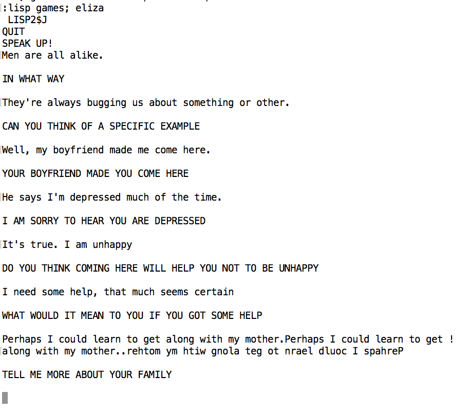
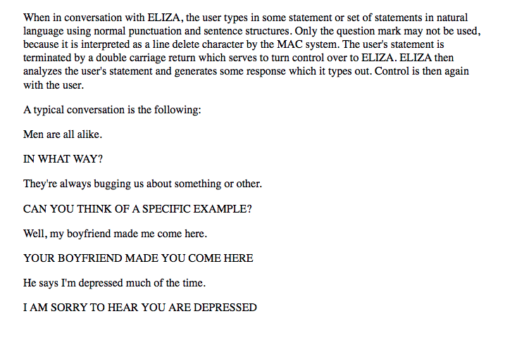
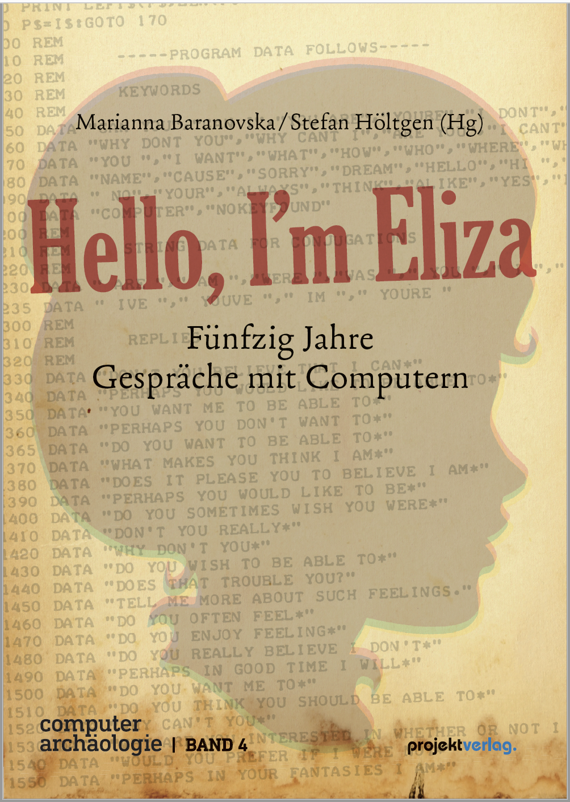

20260718: A conversation between Peter G Neumann and the original ELIZA
Verifiable conversations between real people and Weizenbaum's original MAD-SLIP ELIZA are rare finds. Recently, Paul McJones (Computer History Museum), who has been organizing the late Peter G Neumann's papers, came across a conversation that appears to take place around 1966 between Neumann and a version of the original ELIZA. Neumann was one of the original MULTICS engineers and crossed paths with Weizenbaum at MIT. In fact, it was Weizenbaum who made the connection between the MULTICS project and GE (where Weizenbaum worked before coming to MIT), which led to MULTICS being built on GE hardware.
20260223: Steev Goodwin Presents his Complete JS Rewrite of Original ELIZA at FOSDEM26
Steev (Steven) Goodwin (stevengoodwin@gmail.com) presented his amazing complete rewrite of the MAD-SLIP Eliza into Javascript at the recent FOSDEM conference in Brussels. Steeve writes: "I re-wrote the original MAD and SLIP code, line-by-line, into JS which proved "interesting" to say the least. From sync to async code, working around T'Os, and understanding both source languages..." Here's his repo https://github.com/MarquisdeGeek/eliza-origins and here's his FOSDEM talk: https://fosdem.org/2026/schedule/event/B7BVVJ-eliza_rewriting_the_original_ai_chatbot_from_60_years_bc_before_chatgpt/. If you have 20 minutes, his talk is very funny and educational!
20250617: IEEE Annals of the History of Computing paper on the reanimation of ELIZA appears
Rupert Lane, Anthony Hay, Arthur Schwarz, David M. Berry, and Jeff Shrager have published a paper describing their work on reanimating the original MAD-SLIP ELIZA, on top of a stack that includes an IBM 7094 emulator and the original CTSS operating system:
"ELIZA, created by Joseph Weizenbaum at MIT in the early 1960s, is considered the earliest chatbot. He programmed it in Michigan Algorithm Decoder-Symmetric List Processor (MAD-SLIP) on MIT’s Compatible Time-Sharing System (CTSS) operating system, on an IBM 7094. We discovered an original ELIZA printout in Prof. Weizenbaum’s papers at MIT’s Institute Archives, including an early version of its famous DOCTOR script, a nearly complete version of the MAD-SLIP code, and various support functions in MAD and Fortran Assembly Program. Here we describe the reconstruction and reanimation of this original ELIZA on a restored CTSS, running on an emulated IBM 7094. The entire stack is open source, so that any user of a Unix-like operating system can run the world’s earliest chatbot on their own version of a pioneering time-sharing system."
The world's first chatbot restored on the world's first time-sharing system
In a remarkable achievement for digital preservation, the original MAD-SLIP version of ELIZA - usually considered the world's first chatbot - is running again on its native platform for the first time in nearly 60 years. This historic breakthrough was accomplished by a team of researchers (Rupert Lane, Anthony (Ant) Hay, Arthur (Art) Schwarz, and Jeff Shrager) who successfully restored ELIZA to operation on a reconstructed version of MIT's Compatible Time-Sharing System (CTSS), running on an emulated IBM 7094. Here is a blog post describing the effort, and not to keep you in suspense, here's a Video of the reanimated ELIZA, and here's the code and instructions for how you can do it yourself!
20241223: We're all Bozos on this Bus: ELIZA and The Firesign Theater (including a nod to ElizaGen.org!)
.Jeremy Braddock just (well, in October) published a scholarly yet extremely enjoyable book about The Firesign Theater, the brilliant 1970s-ERA audio improve group. Firesign often rolled technologies into their humor. In particular, the album "We're All Bozos on this Bus" has a long intricate piece that spins in and out of Lisp and ELIZA jokes (among many many others). The Firesign folks had had a demo of ELIZA, probably on a PDP-10. That would almost certainly have been Bernie Cosell's Lisp ELIZA, and we (ElizaGen.org) provided an image of the listing of that ELIZA, which appears as a figure in the book! (I'd tell you which figure and the page, but I loaned my copy of the book out. But if you are a Firesign fan, the book is, IMHO, fantastic throughout!)
20240625: ELIZA Reinterpreted: The world's first chatbot was not intended as a chatbot at all
Jeff Shrager (founder and curator of ELIZAGen.org) has posted a new paper on arXiv re-understanding ELIZA as a research platform, NOT a chatbot: https://arxiv.org/abs/2406.17650. It goes into depth on ELIZA's origins. The paper attempts to detail the "inventive entanglement" of technical and social influences that led Weizenbaum to build ELIZA, and in the way he did. And it describes how ELIZA "escaped" from MIT in the form of Bernie Cosell's Lisp version, as opposed to Weizenbaum's original MAD-SLIP version, leading to a half century of mis-understanding of ELIZA's original purpose.
20240619: Daniel Temkin's Amusing "Drunk ELIZA", demo'ing the Entropy language concept
Daniel Temkin, author of the Entropy programming language concept, has written an ELIZA-like using Entropy-like data that decays over time. The idea is that the programmer is forced to approximate, "giving up precision and control as disorder sets in". This interesting idea leads to an extremely amusing ELIZA-like, that you can run directly on his site.
20240420: Brendan Bellina's Amazing and Hysterical (and Runnable!) HyperCard ELIZA
Brendan Bellina (bbellina@alumni.nd.edu, SilverWandSoftware) has created a wonderful and hysterically funny adaptation of Jeff Shrager's BASIC ELIZA in HyperCard -- late 20th-century programmable note card system from Apple. Amazingly, it runs on a platform called "infinitemac.org", "a collection of classic Macintosh and NeXT system releases and software, all easily accessible from the comfort of a (modern) web browser". Here's a video demo'ing it. Instructions on how to run it yourself are in the video notes. (I highly recommend trying it. The natural stupidity of ELIZA (esp. Shrager's version!) combined with :yoda mode and the voices absolutely kills!)
20240420: Steve Cherry's Apple II P-Lisp and ELIZA (c. ~1980) runnable online!
Brendan Bellina brought to my attention this online executable version of Steve Cherry's P-Lisp (c. 1981) and his adaptation of Jeff Shrager's BASIC ELIZA (from Creative Computing, c. 1977). This was reconstituted from old floppies and made to run by Ron Garret, which is a fairly amazing feat! You can try it here: https://archive.org/details/P-Lisp_v3.0.1 and this video demos it: https://youtu.be/OcJP45A5YCg
20240318: Draft Paper Discovered in which JW Envisions ELIZA's Applications
With invaluable support of the MIT Archivists, especially Allison Schmitt, we have discovered a truly amazing draft (more precisely, outline) of a paper, hand-signed by Joseph Weizenbaum himself (!), intended to accompany the original ELIZA CACM publication, but which never made it to final form. The amazing thing about this proto-paper is that it lays out in great deatil the next steps that Weizenbaum himself envisioned for ELIZA, including extensive discussion of experiments regarding mis-communications and (what we would now call) conversational repairs, applications of ELIZA in education (which were, indeed, followed up by others at MIT, esp. by Paul Hayward and colleagues), and the mysterious closing sentence: "Build a mathematical model." :-) There are many fascinating aspects of this draft/outline, and we encourage you to read it for yourself to really get into Joseph Weizenbaum's head.
20240306: Real Conversations with the Original ELIZA Discovered in the Garfinkel Archive
Anne Warfield Rawls and Clemens Eisenmann curate the archives of Harold Garfinkel, the father of ethnomethodology. They recently provided Team ELIZA with access to the archive where we discovered a whole series of printouts of original conversations between the original ELIZA and subjects in an experiment conducted at Harvard. As far as we know these are the only examples of conversations between real people and ELIZA! More detail and a link to the conversations can be found on The Original ELIZA page.
20240224: ELIZA on an ASR33
We're working on a simulation of what is was like to use ELIZA in the mid 1960s, by embedding Antony Hay's ELIZA in an ASR33 simulator. So far the effort is pretty simplistic, but has basic sanity. Check it out one our Try an ELIZA page.
20240214: Ken Pitman (KMP)'s Lisp ELIZA from MIT-AI's ITS history project
We've added Kent Pitman's (aka. KMP, https://github.com/netsettler) MACLisp ELIZA to the elizagen repo. This was discovered by Lars Brinkhoff, and can also be found on his PDP-10 ITS historical sources repo.
KMP has been a fixture of the Lisp community for decades. Among many other lisp-related activities, he worked on Macsyma, Maclisp, Emacs, and authored the Common Lisp HyperSpec. He also chaired several of the Common Lisp standards subcommittees. He has written several interesting essays on the history of lisp and lisp-adjacent artifacts and activities, available here: https://nhplace.com/kent/Papers/.
In the late 1970s, when he started at MIT, KMP took Joseph Weizenbaum's Intro to Programming (6.030), where he was introduced to ELIZA. Probably having seen Bernie Cosell's BBN-Lisp ELIZA, KMP wrote a version of his own on ITS, a locally-developed OS on PDP-10s, that were the main computers in the MIT-AI lab. ITS had a slightly different version of Lisp (MACLisp vs. BBNLisp), so Cosell's code couldn't be run directly, also KMP wanted to hack the program a bit. He writes:
"While [this code has] definitely got my work in it, it's pretty clearly built on someone else's work. Back then there was not a sense of publication so much as just making existing things better. And everything was a proto variant of free software because there was no place one realistically expected one would sell anything. It was just hack upon hack in that environment. Both intellectual property law itself, and my naive understanding of it, was quite different then."
KMP provided some additional thoughts on his ELIZA:
"The thing about the DOCTOR program, while it was quite elaborate, was that it sort of missed the point of what Weizenbaum was trying to say. It's not that I didn't understand him, but it took me a long time to really come to viscerally understand the seriousness of his point. He said that (paraphrasing, maybe badly, from memory) long before we got to real AI, we would get to things that seemed smart but weren't, and we would overly trust systems that were not really smart. He was, for example, very worried about computerized launch of nuclear missiles using what was then thought to be AI. But the point of the original ELIZA was not to BE elaborate, it was to be simple, and to show how even a tiny, tiny program could seem smart. It was hard not to think it could be smarter if it were not so tiny, but that misses the point, which was about how easily we were confused, not about how much more effectively we could be confused if more energy were put in. So whether my DOCTOR or any other was making the right point was hard to say. My guess is not."
20231203: ELIZA and Ethnomethodology (specifically Garfinkel)
Andrei Korbut, an ethnomethodologist from Belarus now based in Germany, has pointed us to a fascinating recent paper about how ELIZA (and a slightly later conversational program, LYRIC) was used in experiments on human-machine conversation by the most famous ethnomethodologist, Harold Garfinkel. We subsequently made contact with the curator of the Garfinkel archives, Anne Rawls (Bentley University), and the lead of the research team that wrote that paper, Clemens Eisenmann (University of Konstanz, Constance, Germany) who have given us access to the parts of the Garfinkel archive that they have thus far examined. The archive includes, for example, original transcripts from the papers mentioned in the above-mentioned paper, which will be fascinating to visitors of this site. There's lots there, that we'll report as we come across it.
20230421: Eric Platt's c.1979 BASIC ELIZA added to the repo
Eric Platt (https://ericplatt.com/) sent me a copy of a BASIC ELIZA-like program that he wrote around 1979, inspired by one he experienced on a Commodore Pet. He has a lovely blog post here (https://ericplatt.com/dr-challenger-lives/ )describing the rediscovery and resuscitation of his "Dr. Challenger". I've also added it to the repo.
20230210: Two New (well, old) ELIZAs Added to the Repo
Team ELIZA has discovered two new ELIZAs, which have been added to the github repo:
A 1978 Lisp ELIZA discovered by Jeff Shrager on this retro-mirror of MIT-AI's ITS system.
An apparently nearly completely accurate Java implementation of the original ELIZA by Charles Hayden (repo'ed with permission).
20220705: ELIZA Code Discovery Featured on CoRecursive Podcast
(See the fun and interesting errata over on the "The Original ELIZA" page on this site.)
20220627: ELIZA Game by Zachtronics
I came across this interesting game based on ELIZA, by Zachtronics, a semi-defunct boutique game company: "Eliza is a visual novel about an AI counseling program, the people who develop it, and the people who use it."
20220529: An analysis of the FAP HASH function (Anthony Hay)
Anthony Hay has done some further analysis on the FAP HASH function, which is used in ELIZA's memory.
20220519: 1975 LISP ELIZA (Contrib. Lori Levin, author unkown)
Lori Levin has contributed a 1975 Lisp ELIZA from The University of Pennsylvania Moore School of Electrical Engineering. Interestingly, this ELIZA has the script programmed into the code, as opposed to most earlier ELIZAs that read a script. (Ed. note: Lori notes that she didn't write this code. We aren't sure who did, but this is very likely the ELIZA that I remember seeing as a Penn undergrad, as I knew Lori then, but this was well after I'd written my BASIC version, in 1973. -- Jeff)
20220519: ELIZA Scriptwriter's Manual (Computer History Museum)
The Computer History Museum has generously created a PDF of The 1968 ELIZA Scriptwriter's Manual, by Paul R. Hayward. This document helps to fill out a little-known branch in the genealogy of ELIZA which, soon after it was initially created (in 1965), teachers at MIT, esp. Dr. Hayward, sought to apply it in education. The relevant CHM archive entry is here: https://www.computerhistory.org/collections/catalog/102683842. Interestingly, the version of ELIZA described in this document is greatly extended from the original, including what appears to be a MAD-SLIP interpreter built into the ELIZA scripting language.
20210329: As Close an Eliza as One Can Get (Anthony Hay)
Anthony Hay <anthony.hay.1@gmail.com> writes:
This is an implementation in C++ of ELIZA that attempts to be as close to the original as possible. It was made to closely follow Joseph Weizenbaum’s description of his program given in his January 1966 Communications of the ACM paper. It is controlled by a script identical to the one given in the appendix to that paper. When given the prompts that begin “Men are all alike” it gives back the identical responses and recreates the exact conversation from the paper.
I was interested to read that Prof. Millican thinks Weizenbaum “cheated” in order to obtain the conversation shown in his paper. The response in question was “DOES THAT HAVE ANYTHING TO DO WITH THE FACT THAT YOUR…,” which is the last entry in the MEMORY section of the script, rather than the first. But Weizenbaum’s paper says that “…one of the transformations on the MEMORY list is randomly selected…,” so I don’t think it unreasonable to think that the last entry could have been randomly selected on this occasion.
20200809: Elizabeth an Eliza with an easy-to-understand script notation (Peter Millican)
Peter Millican <peter.millican@hertford.ox.ac.uk> writes:
I’m a Philosophy professor at Oxford, who’s spent most of my working life on the boundary with Computer Science and trying to encourage students into that space. Trying to get Humanities students interested through LISP programs is hopeless, of course, so when teaching Computing and Philosophy at Leeds, I developed a chatbot designer system called Elizabeth which is programmable using an easy-to-understand script notation. You can find the latest version at http://www.philocomp.net/ai/elizabeth.htm, and learning materials at http://www.philocomp.net/ai/elizlearn.htm. One of the built-in Illustrative Scripts is transcribed from Weizenbaum’s original paper of 1966. If you look at the second video on http://www.philocomp.net/videos/turing.htm, from 18:30, you can see me going through the dialogue in an online talk (part of whose point was to prepare the students for using Elizabeth in an exercise by seeing the sorts of tricks that can be done). As far as I know, this is the only system that allows non-specialist users to work through the operation of ELIZA, seeing a trace of all its internal processing, and I believe that it faithfully copies the behaviour of the original program as published, with just one exception …
One interesting point that I mention in my talk, but have never seen mentioned by anyone else, is that Weizenbaum’s published dialogue doesn’t actually fit with his published program: one of the responses is out of order (though this can easily be fixed by swapping two of them round, as I do in my script transcription). I take this as evidence that Weizenbaum “cheated” to make his dialogue appear as impressive as possible, and then probably forgot or didn’t bother to change the program accordingly. Have you ever seen a mention of this point? Is it actually well-known?
Peter Millican
Gilbert Ryle Fellow and Professor of Philosophy
Hertford College, University of Oxford
Faculties of Computer Science and Philosophy
A bit more about the problem that Peter discovered in the scripts (from a subsequent email exchange):
I talk about the "cheat" from around 24:25 to 26:00 in the video.
In the script file "Weizenbaum.txt" the matter is annotated like this:
/ ***** No-keyword responses involving "MY" memories *****
/ Order changed to conform with published dialogue:
/ 15. "Bullies. DOES THAT HAVE ANYTHING TO DO WITH THE FACT THAT YOUR BOYFRIEND MADE YOU COME HERE"
N DOES THAT HAVE ANYTHING TO DO WITH THE FACT THAT YOUR [M+1]?
&{M+1\}
N LET'S DISCUSS FURTHER WHY YOUR [M+1]
&{M+1\}
N EARLIER YOU SAID YOUR [M+1]
&{M+1\}
N BUT YOUR [M+1]?
&{M+1\}
Here "N" signifies a "no-keyword" response, while [M+1] picks up the first stored memory (ELIZA only stores "my …" memories, so there's no need for more sophisticated memory management here). "&{M+1\}" then specifies an action to be performed when this response has been triggered - it deletes the first stored memory (which, of course, has just at that point been used).
For comparison, the relevant snippet from Weizenbaum's SLIP program in his article is like this:
(MEMORY MY
(0 YOUR 0 = LETS DISCUSS FURTHER WHY YOUR 3)
(0 YOUR 0 = EARLIER YOU SAID YOUR 3)
(0 YOUR 0 = BUT YOUR 3)
(0 YOUR 0 = DOES THAT HAVE ANYTHING TO DO WITH THE FACT THAT YOUR 3))
Notice that the "DOES THAT HAVE ANYTHING TO DO..." response is last of the four in this group, whereas for the dialogue to work, it needs to be first.
In every other case, my script follows the relevant orderings from Weizenbaum's article, so this is very much a special case!
20190215: Eliza in gnuCOBOL (Arnold J. Trembley)
This amazing Eliza in gnuCOBOL was written by Arnold J. Trembley. It's a slightly indirect translation of Shrager's 1973/1977 BASIC version. The most amazing part of this (to me) is that it was written in 2017!
Mr. Trembley writes:
I also have a link on my website for an executable download for Eliza in GnuCOBOL that runs on Windows 7 and higher. I think it would probably run on Windows XP too.
I probably first saw ELIZA in BASIC from Ahl's computer games for BASIC book, but I also wrote a version in 1974 ANSI-standard COBOL for an IBM Series/1 Minicomputer way back around 1984. But I never saved that source code, so I had to start all over when I converted it into GnuCOBOL.
Getting Eliza to work was a lot of fun.
20190121: Eliza on ITS on a DEC 10 Emulator (Lars Brinkhoff)
A few days ago I had the pleasure of taking a trip in a real live time machine.
About a week ago I got an out-of-the-blue message from Lars Brinkhoff via the ElizaGen issue tracker: "I have a version of ELIZA ported to Maclisp, dated 1977-09-05. Unfortunately, it's just a compiled binary file. Is this of any interest to you?"
Just a binary wouldn't be too interesting, so my initial reaction was muted: "Is there any way to either run it, or extract the embedded code?"
Turns out that Lars had significantly understated the situation: "The binary file is a compiled FASL, fast load file, so it's not easy to extract any code other than PDP-10 instructions. It might be possible, but a lot of work, to reconstruct Lisp code that compiles to approximately the same FASL code."
However, went on: "...we can run it in Maclisp running on a PDP-10 emulator. I have an emulator online."
Eliza on MacLisp on a PDP-10 emulator? Isn't there a level missing here? On what OS?
The answer gave me pause: MIT's ITS. ITS is one of the most important operating systems in CS history. (Among many other interesting historical facts, the original EMACS was developed on ITS!) I recommend reading about it here: ITS on Wikipedia. When I was an undergrad and grad student, in the late '70s and early '80s, we used MIT-AI's ITS remotely through the early ARPANet. Interestingly, at one point (I don't know for how long) the ITS at MIT-AI had an Eliza hacked into its command line driver so that unless you prefixed your commands with a ":", the response was from Eliza!
Eliza on MacLisp on ITS on a Dec 10 emulator? Really?!
Yeah, really!!
Here's the emulator: https://github.com/PDP-10/its
(Lars notes: "...there are more people involved than me. Foremost Eric Swenson who worked on Maclisp and Macsyma back in the day. We [...] update the emulators to support more hardware, fixing bugs, figuring out how to build and run programs, adding new software, Etc.")
If you want to play with a great piece of software history, you can log into this ITS emulator yourself; It's free and open. No password required!
From Lars:
Telnet to "its.pdp10.se, port 10003". Type Control-Z to log in. Then ":lisp games; eliza (init)" to start Maclisp and load ELIZA. It should look something like this:
==================
You:
telnet its.pdp10.se 10003
Trying 88.99.191.74...
Connected to pdp10.se.
Escape character is '^]'.
Connected to the KA-10 simulator MTY device, line 4
You:
type Control-Z
TT ITS.1648. DDT.1546.
TTY 25
2. Lusers, Fair Share = 0%
THIS IS TT ITS, A HIGHTY [sic] VOLATILE SYSTEM FOR TESTING
For brief information, type ?
For a list of colon commands, type :? and press Enter.
For the full info system, type :INFO and Enter.
The management apologizes for the use of the slow TK10 terminal
multiplexer. We'll upgrade to the much faster Datapoint kludge once
it becomes available.
Then you type:
:lisp games; eliza (init)
(Please Log In)
QUIT
SPEAK UP!
Et voila. you're typing back through 40+ years of computer history!
(Use double ENTERs to terminate your sentence to Eliza.)
==================
To test it, I pasted the "standard" example conversation from Wiezenbaum's Eliza paper. Here's a screenshot from the paper:
And here it is, running live on Lars's reborn ITS (the mess at the bottom is because I accidentally pasted the sentence twice, and had to backspace over it. The repeated chars are apparently how ITS displays backspacing):
There's a bit of a mystery about where exactly this version came form. Lars and I theorize that since BBN was right across from the AI lab, and it's known that BBN were users of the ITS systems, this may well be Bernie Cosell's original code!




20181031: "Hello, I'm Eliza" (Stefan Holtgen and Marianna Baranovska)
20181031: Stefan Holtgen and Marianna Baranovska have just published a volume entitled: "Hello, I'm Eliza", with Computer Archaeologie.
Here is the abstract (rendered from the German by Google xlate):
The contributions to this volume are partly based on a conference held in October 2016 at the Institute of Musicology and Media Studies, and bring together authors from the fields of computer science, philosophy, media studies and media dramaturgy. In the individual chapters, the origins of the first chatbot ELIZA, which Joseph Weizenbaum developed at MIT's AI Lab in 1966, are reconstructed, Weizenbaum's programming language SLIP is presented and a first German-language translation of his publication to ELIZA is presented. As an extension of the topic, the authors ask what influence ELIZA had on computer culture, AI research, cultural criticism of the computer and art.
And here's the interesting cover. (Note that the code in the background is a part of Shrager's 1973/1977 BASIC Eliza)

20180529: B5500 Eliza from 1971 (Peter De Wachter)
20180529: Peter De Wachter found a very interesting version of an Eliza clone from c.1971 (!!) Peter writes: "The B5500 emulation project has imaged a bunch of old tapes and they found (among much other software) a 1971 Eliza implementation by Charles Fricks and John Covert from Georgia Tech."
The full story is here:
http://retro-b5500.blogspot.com/2018/05/the-cube-library-tapes.html
The Eliza source code is here:
https://github.com/retro-software/B5500-software/blob/master/CUBE-Library-13/Files/ELIZA-Z100010.gtl
https://github.com/retro-software/B5500-software/blob/master/CUBE-Library-13/Files/ELIZA-SCRIPT.dat
What makes this so interesting is that the implementation language is "Georgia Tech Language" (?), which seems to be an Algol extended with Lisp primitives. The resulting code looks like this:
P1: IF ATOM(CADR(NEXT)) THEN BEGIN
IF CADR(NEXT)=CAR(R) THEN BEGIN
NEXT:=CDR(NEXT);
GO TO L1; END;
GO TO L6; END;
DL:=IF CAADR(NEXT)= "*" THEN CDADR(NEXT) ELSE CDADADR(NEXT);
IF MEMBER(CAR(R),DL) THEN BEGIN
NEXT:=CDR(NEXT);
GO TO L1; END;
(Ed. (Jeff S) notes: CDADADR !!)
20171211: BASIC Eliza via Speech Synthesis (Michael Wessel)
20171211: My friend and colleague, Michael Wessel, who apparently has a soft spot for ancient speech synthesizers, recently noted this curious coincidence/historical anecdote about a German version of my BASIC Eliza. (Michael and I worked together on the AURA project at SRI for about a year around 2013.)
Michael writes:
"About 1985 I typed in a version of your BASIC Eliza from a public library copy of the 'Creative Computing Computer Games' book, into my Amstrad CPC 464 home computer. The book had been translated into German, and so was Eliza! I wish the editors hadn't done so, as it makes much less sense!
Back then I owned a speech synthesizer (the Amstrad SSA-1 for the CPC), and I had extended your BASIC Eliza with speech capabilities. The audio/speech quality was as awful as some of the TRS 80 speech synths you can hear on YouTube.
Now, 32 years later or so I am working on a little spare time hobby project - a modern, understandable speech synthesizer for the Amstrad CPC, which is designed to be compatible with that original "retro" Amstrad SSA-1 speech synthesizer. And indeed, the old Eliza that got extended with SSA-1 speech output is working well with my modern speech synthesizer."
Here's a youtube video of Michael's German-speaking Eliza.
And here is another version for the CPC, also with speech output.
Michael continues:
"With respect to the second video (the English one), the original author of this Eliza version also mentions your Eliza as the source for the program, but he says he extended it significantly, and then I added speech output, this time using the 'native mode' of my speech synthesizer, which gives much better speech quality than the emulated 'retro SSA-1' compatibility mode, as you can hear."
As I mentioned above, Michael and I worked closely together at SRI for about a year. He concluded his note this way: "It's really a funny and strange coincidence that our ways have crossed; What are the chances that you get to work with someone whose BASIC program you typed in from a public library book 30 years ago? Sometimes, the world is small!"
I couldn't agree more!
Here's the disk image of Michael's German BASIC Eliza:
https://cpcrulez.fr/applications_list_util-elisa.htm
To run it:
Download extract the DSK image
Go to: http://cpcbox.com, which is a CPC Emulator in Javascript running in the Browser
Select "Choose configuration -> 464"
Select the Eliza DSK file for "DRIVE A:"
When the CPC boots up, enter "cat"; You should see "ELISA-NS.BAS"
Enter: RUN "ELISA-NS (Without Speech ("NS = no speech")
(The other version is with speech, but doesn't work on the emulator)
Here are some PS2 Screenshots from emulator running in Firefox:


Aggregated Older News
20170728: Through the efforts of Dave Walden and Bernie Cosell, the tapes and listings of Bernie's original Lisp version of Eliza/Doctor have been accepted into the Computer History Museum archives as lot number: X8258.2017.
20170307: Jeffrey Perrone pointed out this hysterical video of Eliza talking to Eliza on two side-by-side Google Home systems!
20151122: John D. writes (email to Jeff Shrager of 2015-11-22): "Back in 1979, Radio Shack released their own commercial version of Eliza for their TRS-80 Model I, sold in their stores. It was written in machine language, not Basic, on cassette tape. In fact, the tape had two versions: a regular one, and a special version that gave Eliza's response through the expensive Voice Synthesizer they were selling (a Votrax derivative)."
"The interesting thing about Radio Shack's version is that it seemed a bit more sophisticated than the original Weizenbaum version. It recognized more words. (Including swear words--just so it could react with 'There's no need for that language.'-- which is weird to see inside a mass-market product sold by a major corporation!) And when you said "Goodbye" it gave you a diagnosis: everything from "You have no psychological problems besides a normal amount of paranoia" to 'I must conclude you are dangerously psychotic and should be locked up'!"
"It was apparently written by Device Oriented Games in Dallas (near where Radio Shack was based)."
Links to runnable code:
Cassette program (Jeff S note: Examination of the cas files reveals that this version was clearly based on the Basic version.)
John also found this YouTube video of a real TRS-80 with the Voice Synthesizer, running Talking Eliza. The Votrax quality is terrible, but that makes it all the more fun!
20151013: Paco Willers has written a GO version of the classic BASIC Eliza. In the process he did a detailed, nearly line-by-line, deconstruction of the Shrager/North 1973/1977 BASIC code.
20150910: Melody Ayres-Griffiths (melody@planetirata.com) found this completely wacko version written by Dave Babcock in Integer BASIC, which uses computed gotos! It looks to my eye like someone took the Shrager/North version and stuck it in a blender. :-) It would be easier to generate this from a compiler, than to write it out straight!
20150105: James Markevitch has updated his 1966 version with a slightly cleaned up transcript, and his amazing PERL BBN Lisp Interepreter! I've uploaded everything to the github site, and it is all also available for download as a tarball here.